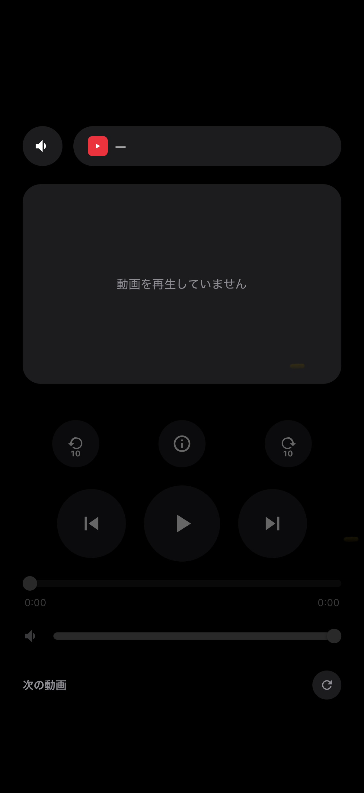
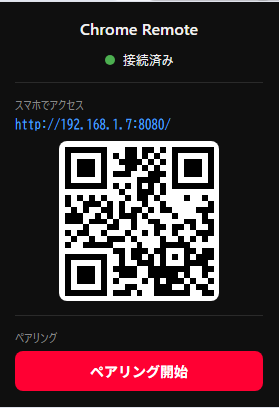

スマートフォンが
YouTube のリモコンになる
PC の Chrome で再生中の YouTube を、手元のスマートフォンから操作。 ゲーム中でも、離れた場所からでも、マウスに手を伸ばす必要はありません。

手元で再生・音量・シークを操作

QR コードを読み取るだけで接続
できること
リモコンとして必要な操作は、ひと通り揃っています。
再生の操作
再生・一時停止、前後の動画への移動、10 秒単位のスキップ、シークバーでの位置調整。
音量とミュート
スライダーで音量を調整。ミュートの切り替えも、PC 側の表示と正しく同期します。
次の動画を選ぶ
関連動画やおすすめの一覧が手元に表示されます。タップするだけで PC 側の再生が切り替わります。
リアルタイム同期
再生位置やタイトルは常に最新の状態。PC 側で操作した内容も、すぐに手元へ反映されます。
LAN 内だけで完結
通信は同じ Wi-Fi の中だけ。外部のサーバーへデータを送ることは一切ありません。
アプリのように使える
スマートフォンのホーム画面に追加すれば、ブラウザを開かずに起動できます。
使い方
セットアップは 4 ステップ。数分で完了します。
Chrome 拡張機能をインストール
Chrome ウェブストアから拡張機能を追加します。（公開準備中）
Chrome Remote をインストール
上のボタンから ChromeRemoteSetup.exe をダウンロードして実行します。
管理者権限は不要です。
Chrome を再起動
インストール後、Chrome を一度再起動すると拡張機能が Chrome Remote を認識します。
スマートフォンで QR コードを読み取る
ツールバーの拡張機能アイコンをクリックすると QR コードとペアリングコードが表示されます。 スマートフォンで QR コードを読み取り、表示されたコードを入力すれば準備完了です。
動作環境
- OS
- Windows 10 / Windows 11
- ブラウザ
- Google Chrome（最新版）
- ネットワーク
- PC とスマートフォンが同じ Wi-Fi に接続されていること
- スマートフォン
- iOS / Android（標準ブラウザで動作）
よくある質問
インターネット接続は必要ですか
YouTube の再生自体にはインターネットが必要ですが、 スマートフォンと PC の通信は同じ Wi-Fi の中だけで完結します。 外部のサーバーを経由することはありません。
個人情報は送信されますか
一切送信しません。再生中の動画のタイトルや再生位置といった情報は、 同じネットワーク内の PC とスマートフォンの間だけでやり取りされます。 外部への送信や、利用状況の収集は行っていません。
なぜ PC 側にソフトウェアをインストールする必要があるのですか
Chrome 拡張機能はスマートフォンからの接続を直接受け取ることができないため、 その橋渡しをする常駐アプリケーションが必要になります。 インストールされるのは、この橋渡しを行うプログラムだけです。
Mac や Linux には対応していますか
現在は Windows 10 / 11 のみの対応です。
YouTube 以外のサービスも操作できますか
現在は YouTube のみに対応しています。
常駐しているアプリを終了したいのですが
タスクトレイ（通知領域）の Chrome Remote アイコンを右クリックし、 「終了」を選択してください。
スマートフォンから接続できません
PC とスマートフォンが同じ Wi-Fi に接続されているか確認してください。 それでも接続できない場合は、 ヘルプのトラブルシューティングをご覧ください。